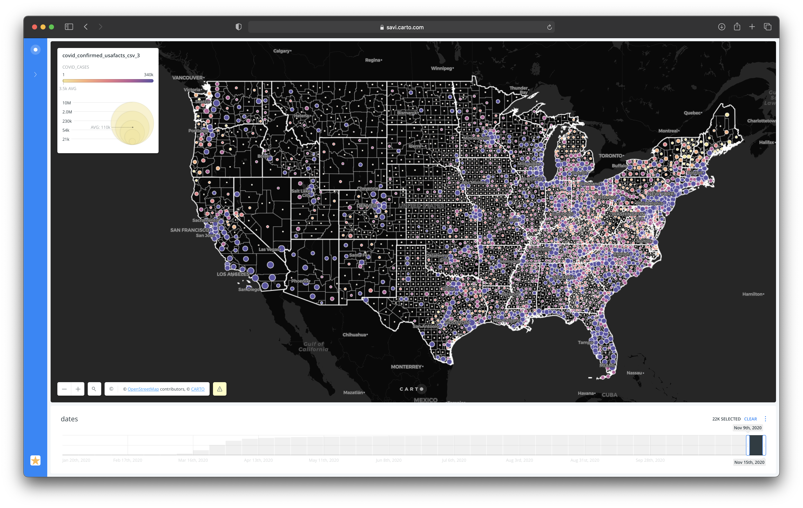
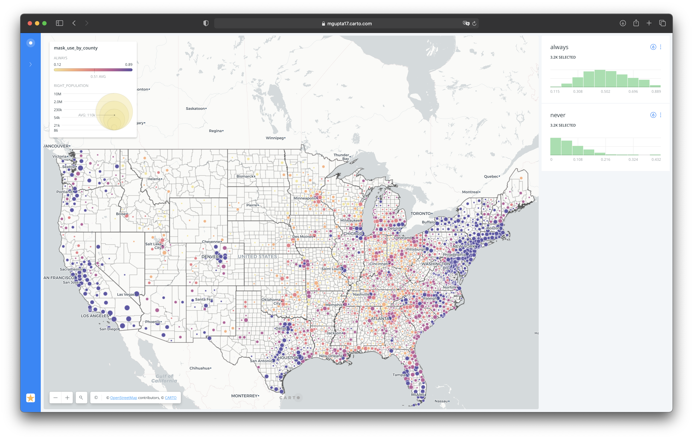

Three interconnected spatial visualizations using Carto and Spatial Markov Chains to predict future COVID-19 hotspots — bridging the gap between raw county-level data and actionable public health insight.
The COVID-19 pandemic generated an enormous volume of data visualizations — but a survey of the landscape revealed two consistent and significant gaps across virtually all of them.
The solution to Gap 01 was to use point size as the variable representing county population — decoupling visual area from data values. The solution to Gap 02 was to apply Carto's Predict Trends and Volatility (PTV) tool, which uses Spatial Markov Chains to calculate probabilistic future states.
The raw data required significant preparation. COVID case data was organized in separate columns, while county latitude and longitude data lived in a separate zip-format table. Merging them required a multi-step process across OpenRefine and Carto.
cell.cross("c_03mr20_1","fips").cells["lon"].value[0]
For some of the more complex datasets, I used a combination of OpenRefine and Carto together to achieve the desired merge results — a workflow that revealed some meaningful limitations of each tool used in isolation.
The first visualization highlights total COVID cases over time in every US county, with point size varying by county population (Jenks classification, 5 buckets, size range 2–15). A date widget allows filtering to specific time windows, enabling analysis of the virus's propagation across states.

The second visualization uses Carto's PTV (Predict Trends and Volatility) tool with Spatial Markov Chains to identify counties likely to become the next hotspots. Markov Chains calculate transition probabilities — the likelihood of a system moving from one state to another — making it possible to visualize directional trends even when outcomes are probabilistic rather than certain.
Key metrics displayed: trend_up (probability of increasing cases), trend_down (probability of decreasing cases), and volatility (degree of variation over time).

The third visualization predicts case trends based on mask use data from The New York Times. PTV analysis was run on the original dataset filtered by mask use behavior (always vs. never), with interactive widgets letting users see projected trend direction by county based on their masking habits.
I used a consistent color scheme across all three visualizations — color-blind safe and subtle enough not to distract from the data. Since each visualization stands alone, the shared palette builds coherence across the series rather than causing cross-interpretation confusion.
— Design rationaleI conducted a brief user study with 2 participants — including one with limited technological experience but deep familiarity with the COVID-19 pandemic. I used the Think Aloud method to capture both functional comprehension and aesthetic reactions simultaneously.
One particularly revealing moment: when a participant asked what "volatility" meant in context, I responded with "what do you think it means?" — yielding a much richer insight into the gap between designer intent and user mental model than a yes/no comprehension check would have produced.
Both participants found the visualizations more useful than any COVID map they had previously encountered. The point-size-for-population approach was consistently praised — users felt it helped them analyze data far more accurately than choropleth maps that use geographic area as a proxy.
Carto is a powerful spatial tool — but the constraints revealed in this project (no text box overlays, fixed widget positioning, projection limitations for Alaska and Hawaii) clarify where purpose-built visualization tools like D3 or Mapbox would offer more design control for production-quality work.